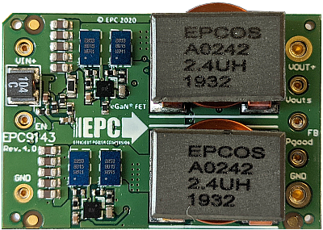
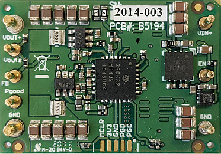

|
EPC9143 300 W 16th Brick DC/DC Module Reference Design
|


|
|
EPC9143 300 W 16th Brick DC/DC Module Reference Design
|
|
2-Phase Synchronous Buck Converter with Advanced Voltage Mode Control and Current Balancing
|  |  | |||
| Top View | Bottom View |
This code example demonstrates a closed loop voltage mode control implementation for dsPIC33CK. It has specifically been developed for the EPC9143 1/16th brick power module, hardware revision 4.0 (see 'Rev' number printed on board top view shown above for verification).
The board starts up automatically when sufficient power is applied to the input terminals of the board, providing a regulated output voltage of 12 V DC at the output of the converter. The startup procedure is controlled and executed by the power controller state machine and includes a configurable startup procedure with power-on delay, ramp up period and power good delay before dropping into constant regulation mode.
An additional fault handler routine continuously monitors incoming ADC data and peripheral status bits and shuts down the power supply if the input voltage is outside the defined maximum range (UVLO/OVLO) or if the output voltage is more than 0.5 V out of regulation for more than 10 milliseconds.
A single, high-speed type IV (4P4Z) voltage mode controller with enforced PWM steering is used to automatically create balanced phase currents in both phases of this interleaved converter. An underlying current balancing scheme compensates component tolerances and deviations over temperature. A built-in adaptive gain control algorithm stabilizes gain variations of the voltage loop controller during input- and output voltage transients, stabilizing cross-over frequency and output impedance, supporting control bandwidths of 25 kHz, for improved transient response, helping to minimize power distribution network (PDN) decoupling capacity.
Featured Microchip Technology Products:
Featured Efficient Power Conversion (EPC) Products:
The EPC9143 1/16th brick power module is best tested when plugged into EPC9531 test fixture. This test fixture also provides all required interfaces to program and debug the dsPIC33CK32MP102 DSC as well as test points and banana jack connectors for easy and safe handling of the kit during bench tests. The EPC9531 QSG provides detailed operating procedure instructions.
The board comes programmed and ready to be used when unpacked. No reprogramming of the target device is required to operate the board unless features or settings such as the nominal output voltage or start-up timing need to be modified.

In case firmware based features need to be changed, the Microchip dsPIC33CK controller can be re-programmed using the in-circuit serial programming port (ICSP) available on the RJ-11 programming interface as well as the 5-pin header provided by the EPC9531 test fixture. These interfaces support all of Microchip’s in-circuit programmers/debuggers, such as MPLAB® ICD4, MPLAB® REAL ICE or MPLAB® PICkit4 and previous derivatives. See EPC9531 Quick Start Guide for details.
The converter is starting up automatically when more than 10.5 V DC are applied across the input terminals of the EPC9531 test fixture. It is not recommended to operate the EPC9143 reference design without proper decoupling capacitance at either input or output. The EPC9531 test fixture provides the best test environment for the converter. Please read the EPC9531 Quick Start Guide to get detailed information about the requirements for setup and operation of this reference design.
This firmware uses a digital type IV controller to close the feedback loop in voltage mode control. This digital loop reads the most recent ADC sample of the output voltage and processes the derived value through a digital type IV (4P4Z) compensation filter. The numeric output is checked and, when necessary, clamped to user-defined minimum/maximum thresholds before being written to the PWM duty cycle register. As EPC9143 is a multiphase converter, a special PWM steering mode has been implemented supporting high-speed current balancing between the two phases. The voltage mode controller has been extended with a self-adapting loop gain tuning algorithm (AGC) stabilizing the frequency domain characteristic over input voltage, output voltage and load, always providing the exact same bandwidth of >25 kHz and stability margins across the entire operating range.
This control loop can be turned on/off by using the ENABLE bit in the STATUS word of the cNPNZ_t controller data structure. The adaptive loop gain modulation is permanently active as soon as the control loop is enabled.
The control loop source code is configured and generated by the PowerSmart™ - Digital Control Library Designer (DCLD) software.
This additional design software is available for download on Github Pages:
Once installed, the controller configuration can be modified. The most recent configuration can be opened from within the MPLAB X® IDE by right-clicking on the file **'v_loop.dcld'** located in the Important Files folder of the Project Manager. When right-clicked, select **'Open In System'** to open the configuration in PowerSmart™ DCLD.
Please refer to the user guide of PowerSmart™ DCLD which is included in the software and can be opened from the help menu of the application.
(c) 2020, Microchip Technology Inc.